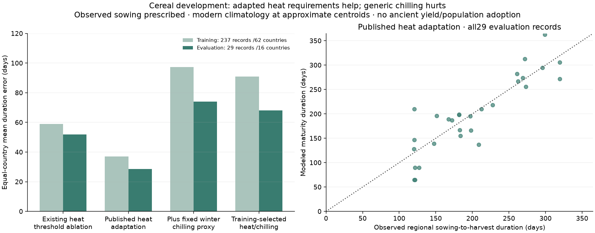
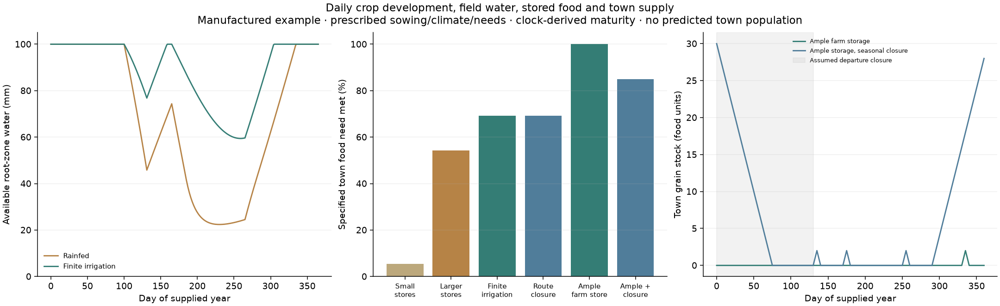
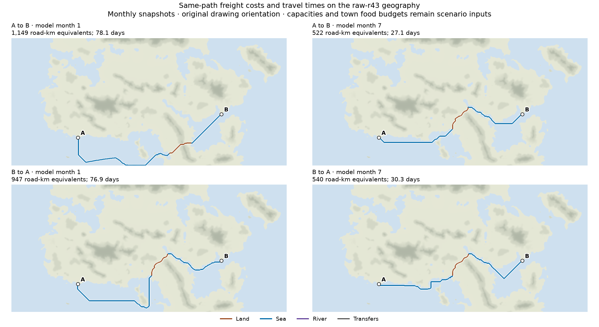
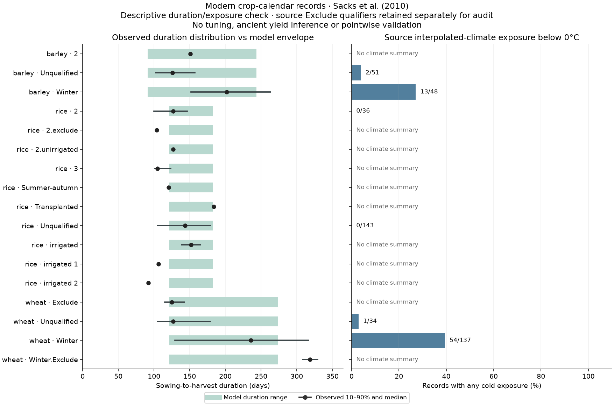
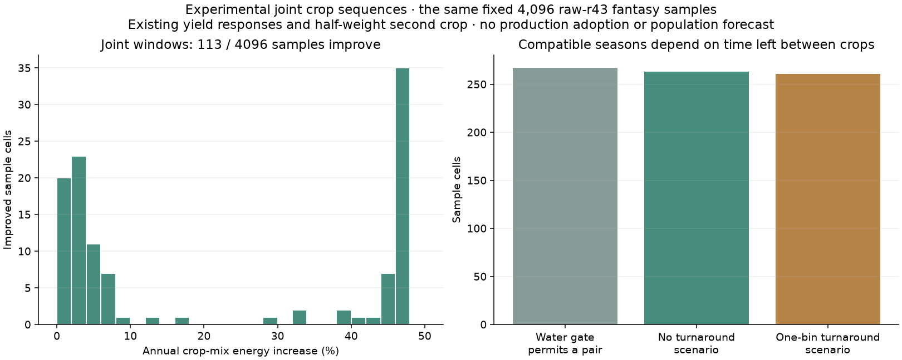
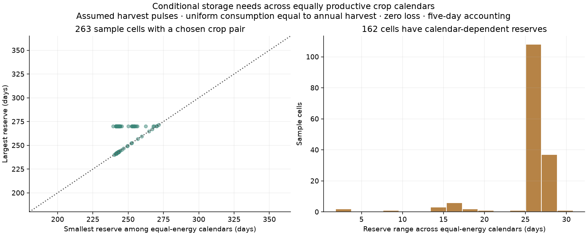
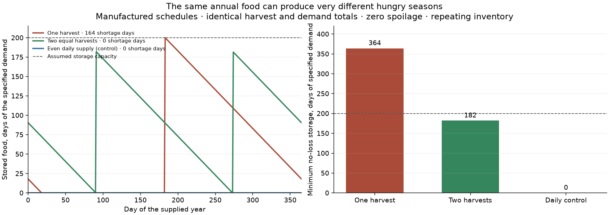
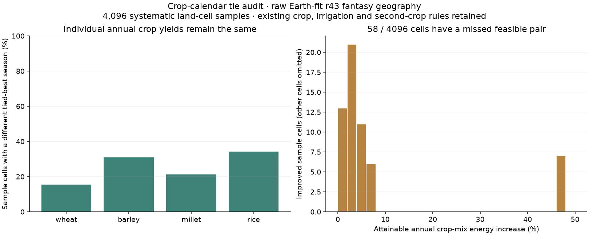

c.200 AD model workshop · 3 November 2026
Food, farming and society
Connect the harvest, the hungry season, the work of farming and the food that reaches a town or a state.
Experimental calendars and food stocks Agronomic validation pending
Daily cereal development: test the mechanisms
The new daily clock implements heat accumulation, vernalization and optional day-length response from Schaphoff and colleagues’ LPJmL4 description (2018). Its reference assumption is day-length insensitivity. It is an isolated clock, not the full vegetation, yield or winter-survival model.
One shared heat scale and winter chilling requirement were fitted on 237 records from 62 countries. The selected parameters were committed before scoring 29 records from 16 evaluation countries. Sowing is prescribed from observed calendars; temperature is interpolated modern climatology at approximate regional centroids.
Equal-country mean conditional duration error, days · no maturity within 365 days costs 365 days| Predeclared clock | Training error | Evaluation error | Evaluation nonmaturity |
|---|
| Existing heat thresholds, thermal ablation | 59.0 | 52.0 | 0/29 |
| Published heat adaptation | 37.0 | 28.6 | 0/29 |
| Plus fixed winter chilling | 97.3 | 74.0 | 2/29 |
| Training-selected heat/chilling | 90.9 | 68.1 | 2/29 |

Climate-adapted heat requirements help this limited test. Generic chilling makes it worse, including after training. The existing-threshold comparator is a thermal ablation, not the normal atlas’s date-prediction accuracy. No ancient yield, sowing-date or population validation is claimed.
The country split prevents parameter selection from using evaluation-country scores. The dataset had already been inspected diagnostically; neighboring countries can remain correlated. These results support further work on thermal adaptation and cultivar requirements, rather than adopting a blanket winter chilling rule.
From field water to stored grain and town food
The daily development clock determines maturity from prescribed sowing and a manufactured temperature year, then a continuous field-water ledger connects those windows to harvest pulses and a directed food-provisioning solver. The water equations follow FAO56 chapter8 and reproduce its published depletion example within 0.05 mm. Harvest and sowing do not refill the soil, and irrigation cannot exceed the specified field supply.
The provisioning component uses capacitated flows with transit times, following the network-flow foundation of Ford and Fulkerson (1958). Food, stocks, shipments and losses have one closed ledger. Costs do not consume calories, gravity weights do not become tonnes, and consumption priorities are an explicit scenario policy.

Manufactured example: prescribed wheat/millet sowing, temperature, rain, evaporation, net irrigation, granaries, transport and food need. The clock determines maturity; no sowing-date optimization is claimed. One food unit is 10,000 kcal. No town population, ancient storage capacity, famine frequency or river withdrawal is estimated.
Supplied annual food need: farm 365 units, town 146 · no arbitrary half-weight second crop| Scenario | Farm store capacity, food units | Farm need met | Town need met |
|---|
| Rainfed, small stores | 120 | 68.5% | 5.5% |
| Rainfed, larger stores | 240 | 100.0% | 54.2% |
| Finite irrigation | 240 | 100.0% | 69.2% |
| Finite water, seasonal route closure | 240 | 100.0% | 69.2% |
| Ample farm storage | 365 | 100.0% | 100.0% |
| Ample storage, seasonal closure | 365 | 100.0% | 84.9% |
Small stores can lose harvest surplus and leave later needs unmet. A route closure can add little while storage already binds. With ample farm storage, the paired closure case isolates a transport limit. All six scenarios close separate water and food budgets.
World-map integration still needs verified crop/cultivar behaviour, soil and seasonal water supply, historical storage and labour evidence, and town-demand and cargo-capacity scenarios. The experimental connector below now retains cost and time on one actual-world route; it does not infer cargo capacity.
Seasonal freight routes on the current world
The connector now carries freight cost, physical duration and transport mode along the same directed route on the raw-r43 geography. A cheap voyage can be slow; road-kilometre cost equivalents are not travel days. The routes reuse the project’s ORBIS-based transport assumptions and climate-sensitive sailing, roads and rivers.

A/B are distinct marked ports chosen by a fixed drawing-position rule before routing. Nearby place names are context, not verified town identities. Model months 1 and 7 were selected in advance; the drawing keeps its original orientation. Blue is sea, brown land, purple river, gray transfers. White outlines separate sea routes from the water.
Season and direction change the path. Under the supplied food budgets, stores and departure capacities, both directions meet all 146 units of town food need, as well as the farm’s 365. The budgets are deliberately identical manufactured inputs at A and B. This demonstrates a connected food ledger; it does not establish local production, cargo tonnage, prices or town population.
All 12 months and both directions
One least-cost path per month and direction · not necessarily the fastest path| Model month | A→B cost, road-km equivalents | A→B days | B→A cost, road-km equivalents | B→A days |
|---|
| 1 | 1,149 | 78.1 | 947 | 76.9 |
| 2 | 1,153 | 77.0 | 953 | 77.6 |
| 3 | 950 | 63.9 | 828 | 52.4 |
| 4 | 654 | 41.8 | 584 | 35.8 |
| 5 | 594 | 34.2 | 576 | 34.5 |
| 6 | 521 | 27.2 | 523 | 28.1 |
| 7 | 522 | 27.1 | 540 | 30.3 |
| 8 | 516 | 26.3 | 544 | 30.8 |
| 9 | 524 | 27.6 | 553 | 31.9 |
| 10 | 603 | 37.5 | 629 | 41.5 |
| 11 | 632 | 37.9 | 616 | 38.3 |
| 12 | 955 | 63.5 | 858 | 55.6 |
These are monthly snapshots: the departure month’s conditions remain fixed through the voyage. The connector uses edgewise sailing expectations, rather than the separate whole-voyage weather-spell model. Departure capacity and storage are prescribed; ships, return voyages and fleet availability are not modeled.
The audit also found 155 directed node pairs with parallel transport alternatives per month. The connector chooses an alternative instead of adding their costs. Existing atlas trade/travel graphs are unchanged; their parallel-edge handling needs a separate measured review before replacement.
How much does choosing parallel alternatives change the result?
A paired check holds topology and every coefficient fixed for ten predetermined source locations and four seasons. None of 360 sampled directed town-to-town costs changes. Broad market access changes by at most 0.0107%; local access by at most 0.0735%. Some nearby map cells become cheaper to reach. This confirms a real edge-handling problem with a small effect on these sampled aggregate measures.
Maximum across the ten sources in each month · fixed cost scales 30 /270 road-km| Model month | Local market access change | Broad market access change | Reachable claimed population with cost reduction >1 road-km equivalent |
|---|
| 1 | 0.0734% | 0.0107% | 0.38% |
| 4 | 0.0465% | 0.0056% | 0.21% |
| 7 | 0.0374% | 0.0106% | 2.65% |
| 10 | 0.0334% | 0.0030% | 0.13% |
Market access is discounted catchment population, not food tonnage or town size. This source sample does not cover every town pair, fit or political travel mode. Reducing the cost of parallel alternatives cannot make a shortest path dearer; that mathematical property does not establish historical accuracy.
All paired aggregation results, source selection and invariantsEarlier crop-calendar and reserve experiments
What observed crop calendars reveal
A declared check against Sacks and colleagues’ published calendars (2010) finds a gap in the current crop windows, especially for winter cereals. These are modern regional records, not ancient cultivars or pointwise yield validation. No model parameters were tuned.
Selected unflagged groups · complete qualifier groups and exclusions are downloadable| Crop group | Records | Duration outside model range | Still outside with 30-day margin | Cold exposure /available climate summaries |
|---|
| Winter wheat | 138 | 55 | 22 | 54/137 |
| Winter barley | 49 | 13 | 2 | 13/48 |
| Rice, unqualified | 145 | 36 | 2 | 0/143 |
This diagnostic identified missing winter-cereal development in the production evaluator. An isolated daily clock is now implemented and evaluated above, using Schaphoff and colleagues’ LPJmL4 description (2018). The complete crop/yield model still requires validation.
All observed crop and qualifier groups

472 unflagged records and 9 original Exclude-qualified records are retained separately. Missing climate summaries are unavailable, not zero. Cold exposure comes from interpolated source climatology; its percentage is not an exact model-rejection rate. Model duration coverage is a necessary timing check, not a predicted-date score.Choose crop seasons together
The calendar prototype retains every annual growing window and compares compatible crop sequences. It can trade a little yield from one crop for a better annual combination. Each individual crop’s maximum still exactly matches the existing yield model.
Waha and colleagues (2013) motivates considering sowing dates and crop sequences together; their global multiple-cropping study (2020) supports checking non-overlapping seasons and limits to intensification. This is our simplified prototype, not a reproduction of those models or a reconstruction of ancient farming.

The same 4,096 raw-r43 fantasy sample cells. The inherited half-weight second crop and water-access gate are retained for comparison; neither is established here as a universal 200 AD rule. One climate bin is about 30 days, so the turnaround cases are coarse sensitivity scenarios.
Diagnostic sample counts · higher modeled energy is not independent agronomic validation| Turnaround scenario | Higher-energy combination than current selection | Chosen crop pairs |
|---|
| No turnaround bin | 113 | 263 |
| One bin after each crop | 110 | 261 |
Changing the calendar origin preserves optimal energy and the alternatives. There are still several equally good schedules in 3,150 samples. The model retains those alternatives; its example schedule is not an observed harvest date.
Equal harvest totals, different reserve needs
Across equally productive annual calendars, 162 samples have different minimum storage requirements, with a range of up to 31 days of the specified food need.
This is a conditional inventory scenario: harvests arrive at rounded climate-bin maturity boundaries, annual consumption equals the edible harvest, consumption is uniform and storage has zero loss. No ancient granary capacity, loss rate, famine frequency or population is fitted.

Bounds use every tied-optimal annual schedule. Five-day and daily accounting differ by at most 4 days here. 5 perennial-only samples retain unknown timing and blank CSV bounds. Reserve days are a food-budget unit, not a measured granary size.
The reserve equation is derived from the food ledger and independently checked against its cyclic-deficit calculation. FAO’s post-harvest framework motivates separate production, storage and consumption accounts; it does not supply period-specific loss coefficients. Crop-water dynamics and observed-calendar checks remain necessary before food-security maps.
Earlier checks: manufactured storage example and calendar tie audit
Seasonality and storage
The prototype accounts for harvest, meals, stored food, spoilage, overflow and unmet demand. Annual food production alone does not tell us whether food is available through the whole year.
This is a manufactured example. Each schedule supplies 365 units of food against 365 units of demand per year, with storage for 200 days of that demand and zero spoilage. These are assumed schedules, not ancient crop yields, the world’s harvest dates or famine probabilities.

A single harvest needs 364 days of demand in overnight food storage; two equal harvests need 182. At the assumed capacity of 200, the single-harvest schedule has 164 shortage days in its repeating year. A repeating inventory can still contain shortages.
Manufactured schedules · identical annual harvest and food need| Supply schedule | Minimum no-loss storage, days of demand | Shortage days at assumed capacity |
|---|
| One harvest | 364 | 164 |
| Two equal harvests | 182 | 0 |
| Even daily supply (control) | 0 | 0 |
The food ledger closes: initial stocks plus harvest equal meals, spoilage, overflow and final stocks. Reserves are explicit; an enormous inherited store cannot feed an annual deficit forever in a repeating scenario.
Before harvest calendars can drive maps
On 4,096 systematic samples of the raw r43 fantasy geography, shifting only the calendar’s starting point changes the selected crop mix in 226 cells, although individual annual crop yields stay identical. Retaining alternative tied-best seasons finds a better feasible crop pair in 58 cells.

Diagnostic sample results, not whole-map area estimates or observed agronomic accuracy. The right-hand histogram shows improved cells only. Different crops, the existing water gate and half-weight second crop are retained. No published yield or population estimate has changed.
The next step is to preserve feasible season alternatives and choose compatible crop sequences together, then test the resulting calendars before feeding food stocks. A tie-breaking choice is not evidence of a real harvest date.
Proposed mechanics and maps
| Mechanic | Useful maps or views | Status |
|---|
| Seasonal food stocks | Hungry season, reserves, storage requirement | Conserved prototype; map validation pending |
| Grain provisioning for towns | Import dependence, food hinterlands, vulnerable supply routes | Conserving prototype and world-route connector; production inputs pending |
| Household labour | Food-production workload, harvest bottlenecks, labour vs land limits | Proposed |
| Finite irrigation water | Water-constrained irrigable land, downstream shortages | Field budget prototype; basin allocation proposed |
| Seasonal herds | Winter pasture, fodder deficits, transhumance corridors | Proposed |
| State provisioning | Collectable surplus, capital and garrison supply | Proposed |
The recommended first integration is crop calendars and food stocks, followed by actual grain provisioning over the existing directed road, river and sea network. Household labour then separates a productive environment from one that is easy to farm.
What must be established before world maps
- Harvest calendars: preserve alternative feasible seasons. The annual crop model’s tie-breaking is not evidence of one real harvest date. Double crops and perennials need their own timing.
- Period storage: capacity and loss assumptions need ancient or comparable low-input evidence. Seed storage and different food types require separate accounting.
- Water and labour: being near a river is not a finite irrigation supply, and a normalized flow index is not discharge. Food-production work is only part of total subsistence work.
- Population and institutions: market catchment residents are not town inhabitants. Food support, actual settlement, taxation and state formation are separate questions.
The existing FORGE-inspired food-store option was tested without adoption. This agricultural inventory prototype is a separate component. Neither model makes climate or biome a universal score of societal development.
Research foundations
FAO post-harvest systems provides the production-to-consumption framework. Stanford ORBIS supplies a historical transport basis already used by the project.
Bogaard and colleagues, 2025 develops the archaeological labour/land-limited farming framework. Mayshar, Moav and Pascali, 2022 motivates testing the appropriability of crops rather than equating total productivity with state power. These works support hypotheses; they do not provide universal c.200 AD coefficients.